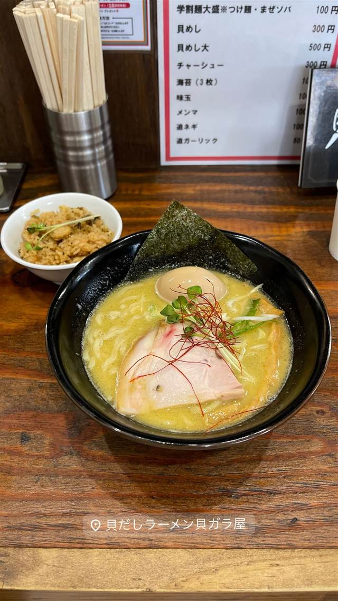
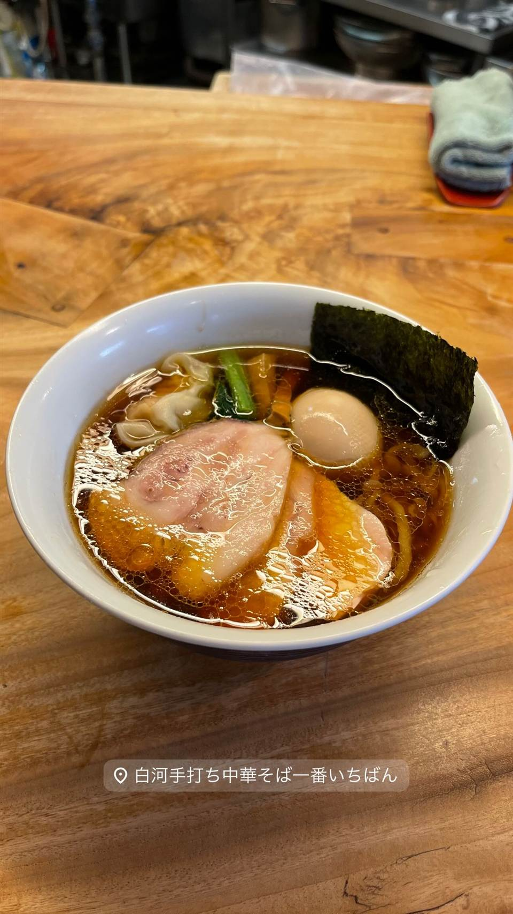

ラーメン · 煮干し・魚介 · 町田
貝だしラーメン 貝ガラ屋 町田店
3種の牡蠣でとる白湯スープ、ポタージュのような濃厚牡蠣ソバ
貝だしラーメン貝ガラ屋
神奈川・淵野辺発の牡蠣だしラーメン専門店で、3種の牡蠣を使った白湯スープはポタージュのようなとろみが特徴。「他にないラーメンを」という店主の試作の末に生まれた濃厚牡蠣ソバが看板メニューで、町田店は2024年オープンの2号店にあたる。
TRIVIA
豆知識
- 店名は「貝ガラ屋」だが看板は牡蠣メインで、実際は複数の貝から出汁をとる
- 運営元は焼鳥チェーン「鳥貴族」などを手がけるトラオム株式会社
REVIEWS
世間の評判
93.3ラーメンDB
牡蠣出汁濃厚スープと貝めし
- 牡蠣の風味が濃厚なスープで貝めしにかけて食べるのが人気という声が多い
- クセや塩味が強めに感じられるという声もある
- 牡蠣が好きな人にはたまらない味わいと評価されている
ラーメンデータベース 口コミ43件・総合745位・最新 2026-07
| 創業 | 町田店は2024年6月14日オープン（淵野辺の本店から展開）。 |
|---|---|
| 系譜 | 神奈川・淵野辺で生まれたブランドで、鳥貴族などを展開するトラオム株式会社が運営。町田店はその2号店として出店。 |
| 看板 | 濃厚牡蠣ソバ |
| こだわり | 厳選した3種類の牡蠣でとる白湯スープが特徴で、ポタージュのようなとろみのある濃厚な口当たり。つけ麺やまぜそばのメニューもある。 |
| どこから | 東京から1時間ほど |
| 営業時間 | 月〜木 11:00-14:50、17:00-20:50 金〜日 11:00-20:50 |
| 予算 | 夜 ¥1,000～¥1,999 |
| 場所 | 町田 東京都町田市中町1-19-6 魚貞ビル1F |
| メモ | 町田駅近くの魚貞ビル1Fに立地。 |
食べたもの：貝だしラーメン、貝めし
地図で見る店の情報ラーメンDBX（その日の営業）Instagram
NEARBY
近い店・同じ系統の店
-
 ★
煮干し・魚介 荻窪
there is ramen
開業1年でミシュランのビブグルマンを獲得した花びらチャーシュー
昼 ¥1,000～¥1,999 夜 ¥1,000～¥1,999
★
煮干し・魚介 荻窪
there is ramen
開業1年でミシュランのビブグルマンを獲得した花びらチャーシュー
昼 ¥1,000～¥1,999 夜 ¥1,000～¥1,999
-

★ 醤油・中華そば 町田駅 白河手打中華そば 一番いちばん 白河ラーメン元祖「とら食堂」仕込みの手打ち太縮れ麺 昼 ¥1,000～¥1,999 夜 ¥1,000～¥1,999 -
 ★
煮干し・魚介 旗の台
煮干しNoodles Nibo Nibo Cino
煮干しにオリーブオイルとニンニクを効かせた独自の「ニボニボチーノ」という一杯
昼 ¥1,000～¥1,999 夜 ¥1,000～¥1,999
★
煮干し・魚介 旗の台
煮干しNoodles Nibo Nibo Cino
煮干しにオリーブオイルとニンニクを効かせた独自の「ニボニボチーノ」という一杯
昼 ¥1,000～¥1,999 夜 ¥1,000～¥1,999
-
 ★
煮干し・魚介 三鷹駅
ラーメン 健やか
鶏と大アサリのダブル出汁が効いた無添加スープ
昼 ¥1,000～¥1,999 夜 ¥1,000～¥1,999
★
煮干し・魚介 三鷹駅
ラーメン 健やか
鶏と大アサリのダブル出汁が効いた無添加スープ
昼 ¥1,000～¥1,999 夜 ¥1,000～¥1,999
-
 煮干し・魚介 雪が谷大塚
らぁめん葉月
丸鶏と名古屋コーチン、煮干しの清湯スープに極太のつけ麺
昼 ¥1,000～¥1,999 夜 ¥1,000～¥1,999
煮干し・魚介 雪が谷大塚
らぁめん葉月
丸鶏と名古屋コーチン、煮干しの清湯スープに極太のつけ麺
昼 ¥1,000～¥1,999 夜 ¥1,000～¥1,999
-
 煮干し・魚介 蒲田駅
麺屋 まほろ芭
広島県産牡蠣を1杯に8個使う濃厚牡蠣煮干しそば
昼 ¥1,000～¥1,999 夜 ¥1,000～¥1,999
煮干し・魚介 蒲田駅
麺屋 まほろ芭
広島県産牡蠣を1杯に8個使う濃厚牡蠣煮干しそば
昼 ¥1,000～¥1,999 夜 ¥1,000～¥1,999